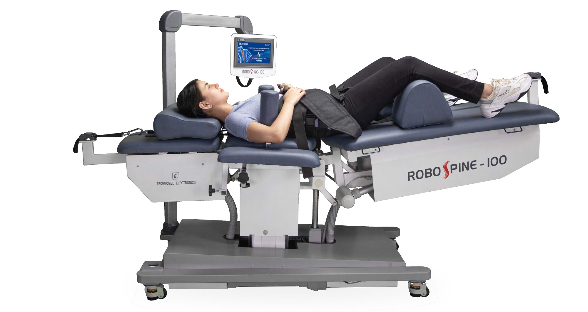
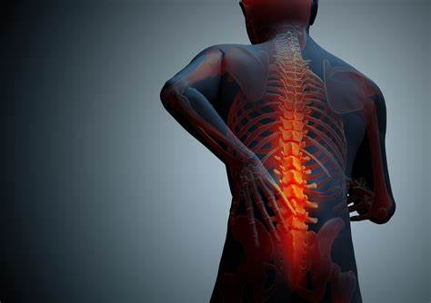
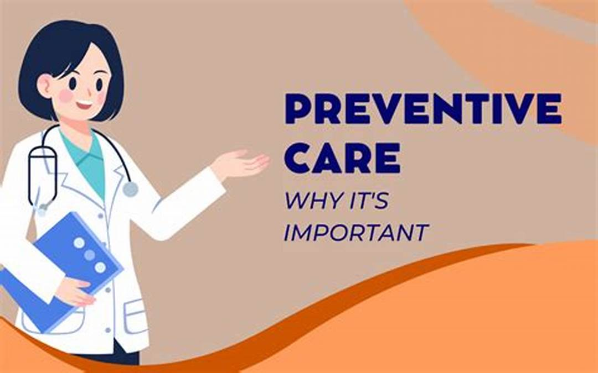
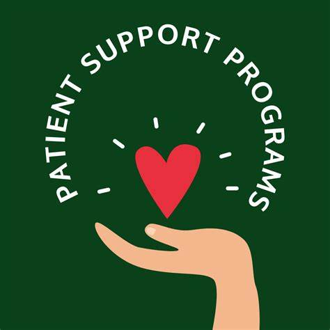

At Pro Spine, we combine advanced technology and personalized treatment plans to empower your recovery journey. Our dedicated team is here to help you achieve a pain-free life through innovative, non-invasive therapies tailored to your needs.
Pro Spine is equipped with cutting-edge technology, including robotic spinal decompression, which can effectively relieve pressure on the spine and address chronic pain issues. This innovative approach often reduces the need for invasive surgeries.
We use high-precision diagnostic and therapeutic equipment, ensuring accurate diagnoses and efficient treatment plans tailored to each patient’s condition.
From tailored exercises to hands-on techniques, our physiotherapy programs are customized to help patients recover quickly and regain strength.
For patients dealing with ongoing pain, Pro Spine offers specialized pain management programs, including non-invasive interventional procedures and medication management, to provide lasting relief.
At Pro Spine, we believe in personalizing each treatment plan based on a patient’s unique condition, lifestyle, and recovery goals, enhancing the chances of a successful outcome.
We educate patients on the importance of daily exercise routines, posture correction, and lifestyle modifications to prevent future issues, particularly relevant for office-based workers who are prone to musculoskeletal conditions.
Our team comprises specialists with years of expertise in physiotherapy, pain management, and orthopedic care, all dedicated to helping patients through their recovery journey.
Our therapists include certified pelvic floor rehab specialists, skilled in treating pelvic floor disorders, which is crucial for patients with specific pelvic issues, especially women’s health concerns.
Pro Spine runs regular health awareness programs and seminars on topics like office syndrome and chronic pain management, empowering patients to take charge of their health.
We provide thorough follow-up and ongoing support, ensuring that patients stay informed about their progress and receive any additional guidance needed during recovery.
Our services are designed to be accessible, with special offerings like health campaigns, where we provide discounted treatment packages to make advanced care affordable for a larger population.
For patients unable to visit in person, Pro Spine offers teleconsultations, extending expert advice and care beyond physical boundaries.
Pro Spine prioritizes conservative care and non-surgical treatments. Through therapies like robotic spinal decompression and guided physiotherapy, we aim to reduce pain and restore function without the need for invasive procedures.
Our approach focuses on identifying and addressing the root causes of pain and discomfort to help patients achieve long-lasting relief and improved quality of life.
At Pro Spine, we prioritize a holistic approach that focuses on the individual needs of each patient. Our personalized treatment plans are designed to address specific conditions and enhance overall well-being.
Our experienced and compassionate team of specialists is dedicated to providing you with the highest level of care. With diverse expertise, we work together to ensure a comprehensive treatment experience.
We utilize the latest advancements in technology and treatment methods to deliver effective results. Our non-invasive techniques often lead to faster recovery times and improved outcomes.
We believe that informed patients are empowered patients. Pro Spine is committed to educating our patients about their conditions, treatment options, and preventive care strategies to foster long-term health.
Our services are designed to be accessible for everyone. With flexible appointment options, teleconsultation services, and affordable treatment packages, we strive to make high-quality care available to all.
At Pro Spine, we listen to our patients and involve them in the decision-making process. Your preferences, concerns, and goals are integral to creating an effective treatment plan that works for you.